This is personal study note
Copyright and original reference are from:
www.youtube.com/watch?v=S065KRjXRSY
스프링 프레임워크 강의 12강 - 어노테이션을 이용할 때의 장점과 @Autowired를 이용한 DI 해보기
스프링_프레임워크_강의_12강_어노테이션을_이용할_때의_장점과_@Autowired를_이용한_DI_해보기
================================================================================
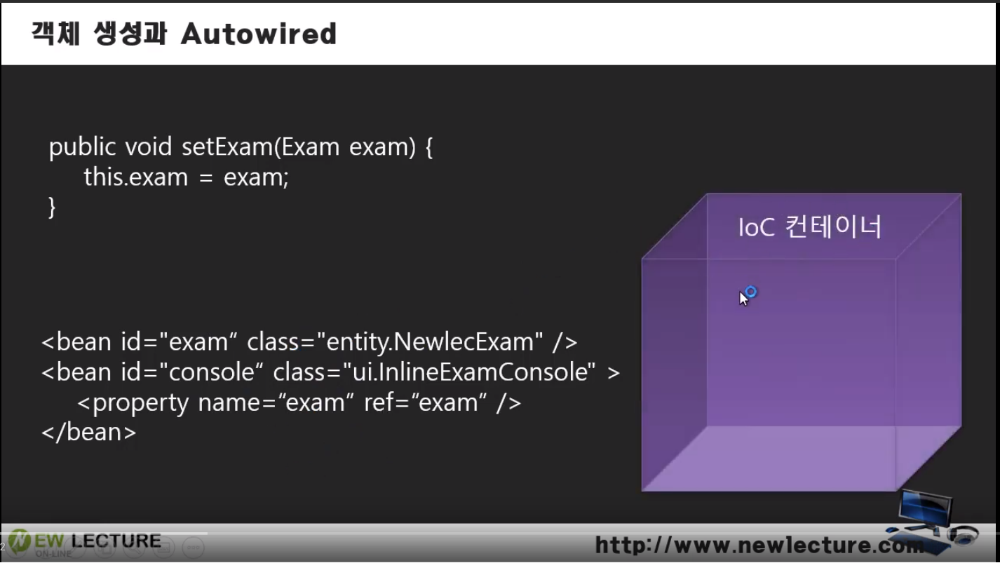
- 객체를 생성하고, DI 작업을 하기위해서, 스프링은 IoC 컨테이너를 가지고 있음
- 스프링이 xml 파일을 읽는다
- exam 객체를 만든다
- console 객체를 만듦
- dependency (ref="exam") 를 setter 함수 (name="exam") 에 injection 함
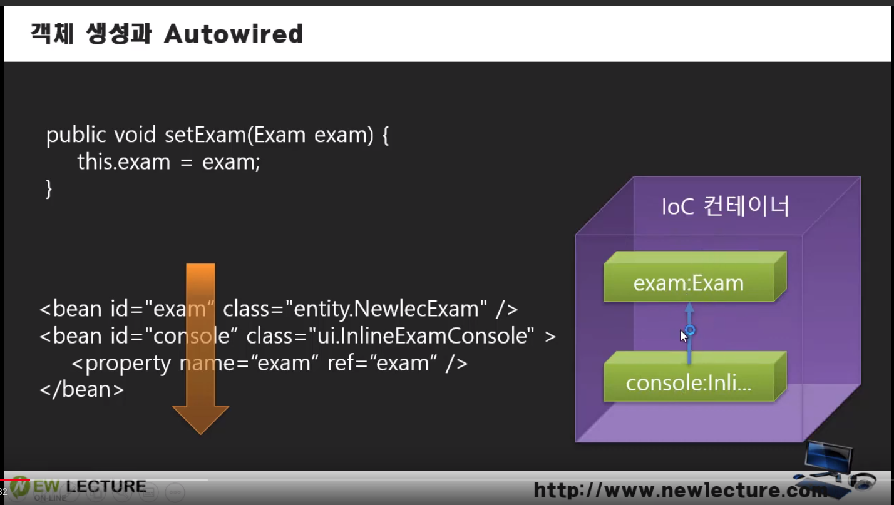
================================================================================
- Injection (property 부분) 없애면 화살표 (결합) 없어짐
================================================================================
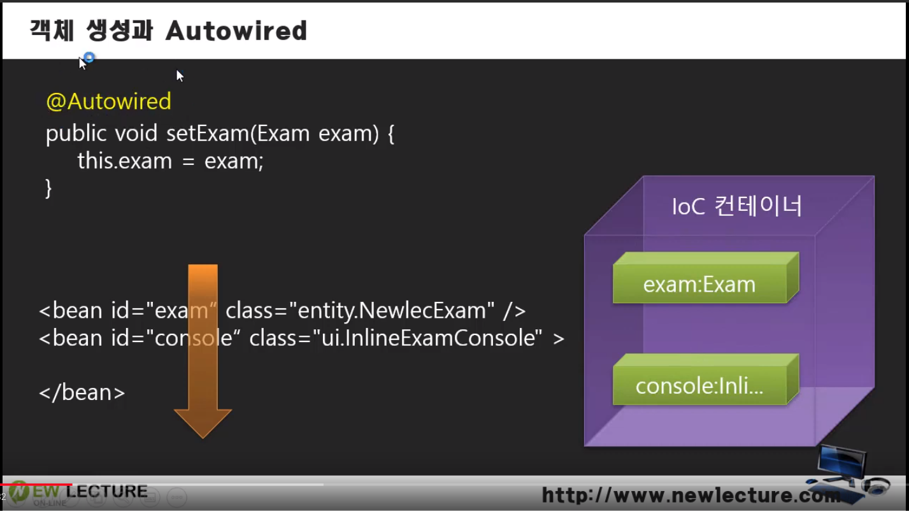
- 스프링이 @Autowired 읽으면 결합이 복구됨
- 스프링이 안읽을수도 있는게 문제
- xml 보면 객체 생성은 있는데, 코드 내에 어노테이션 있다고는 안함
- 객체 속을 스프링이 들여다보게 설정할 수 있음
- 저 설정 있으면 스프링이 객체 만들고, 객체 안에 어노테이션 있는지 확인함
================================================================================
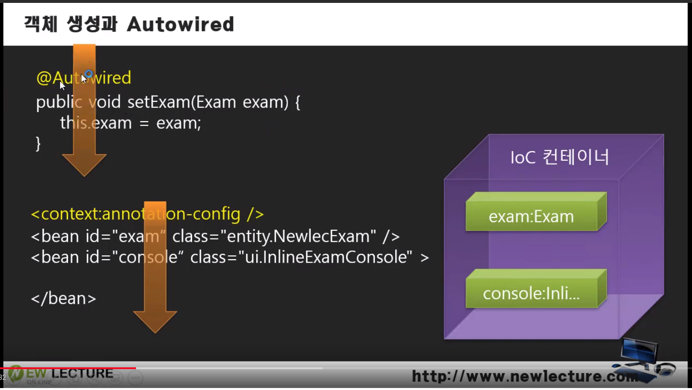
- 스프링이 @Autowired 부분 읽음
- exam 객체를 IoC 컨테이너에서 자동으로 찾아서, 여기에 넣어라
================================================================================
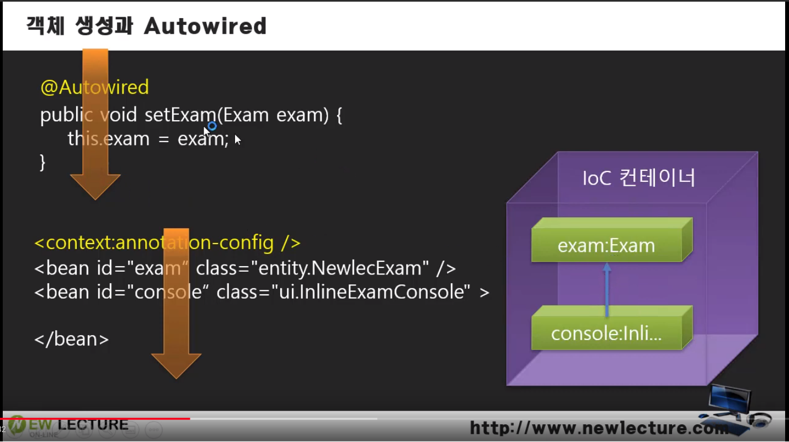
- 화살표가 살아남
- 궁금한 사항:
- IoC 컨테이너에서 찾을때, 뭘로 기준으로 찾을까?
- 자료형 Exam?
- 이름 exam?
- 이름하고는 상관없음
================================================================================
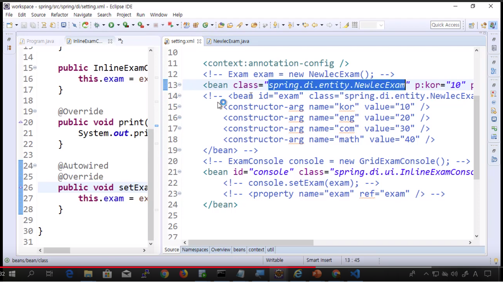
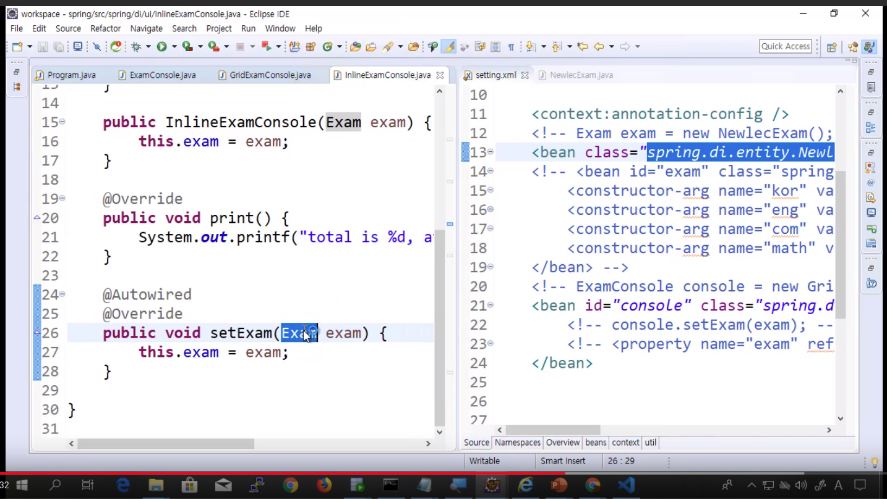
- 재밌는것은 형식명칭이 같지 않다
- NewlecExam
- Exam
- Exam 과 부합될수 있는 객체를 찾아서 바인딩한다는 의미임
================================================================================
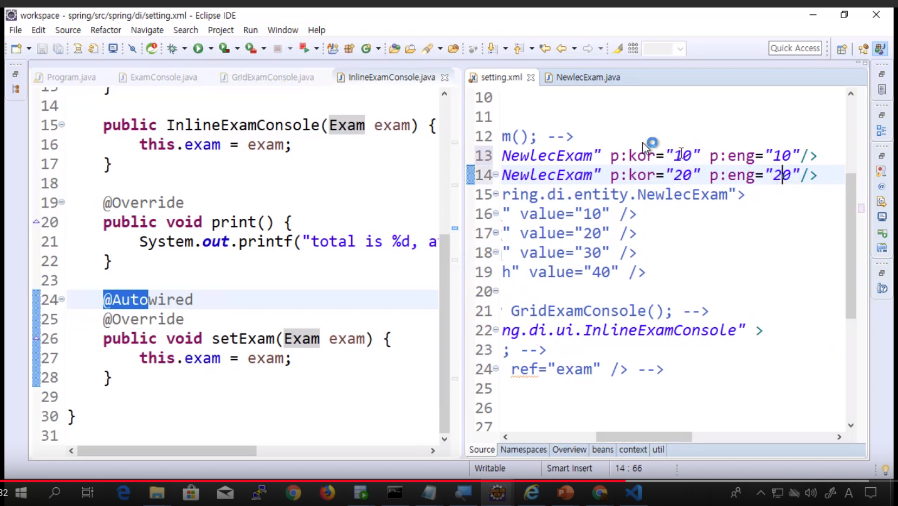
- 호기심
- 객체가 두개있을때
- 에러
- 모호해서 못함
================================================================================
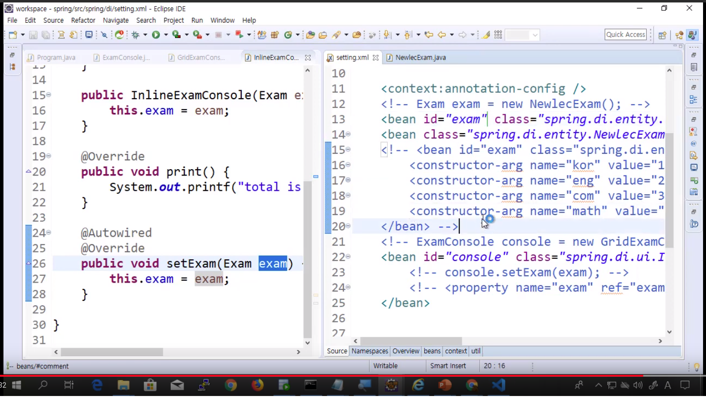
- 하나에는 이름 (exam) 부여
- 동작함
================================================================================
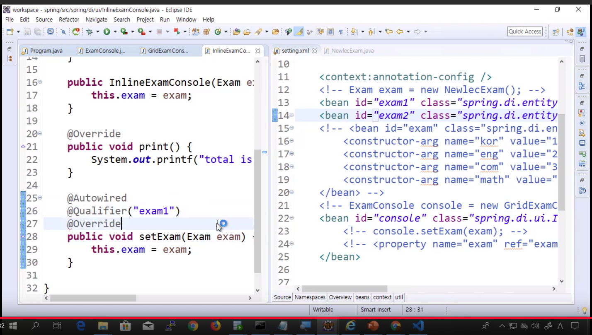
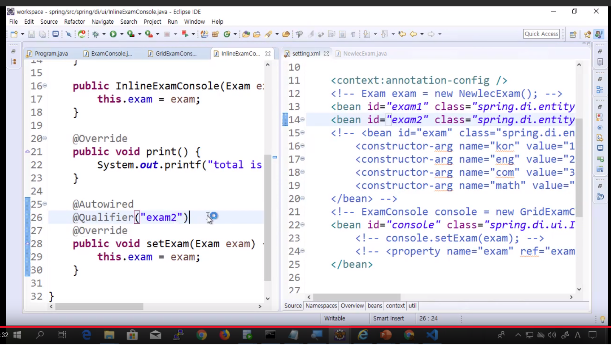
- @Qualifier 가 사용되는 상황